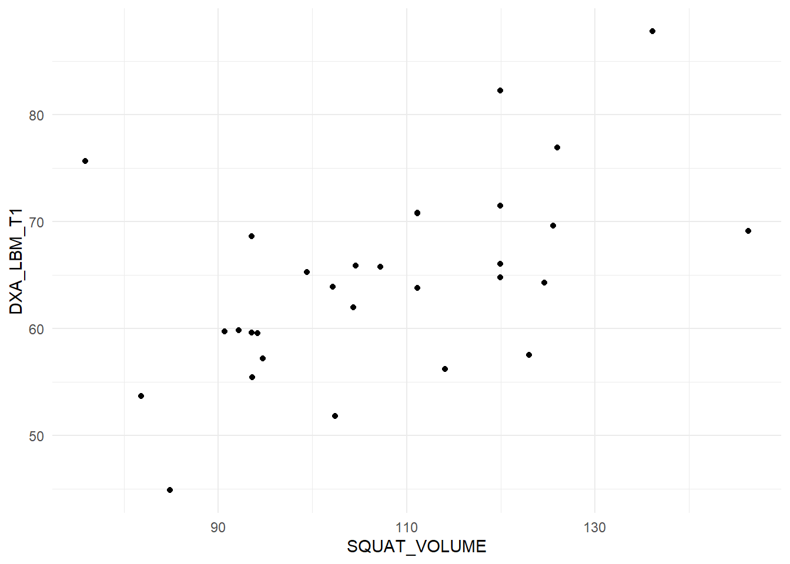

Code
library(tidyverse)
library(exscidata)
dat <- hypertrophy %>%
select(PARTICIPANT, SQUAT_VOLUME, BODYMASS_T1, DXA_LBM_T1) %>%
mutate(SQUAT_VOLUME = (SQUAT_VOLUME/1000)) We are already familiar with the regression model. We will now take a step back, to the correlation. A correlation is a unit-less measure of the relationship between two variables. The strength of the relationship is expressed between -1 and 1 where values closer to 0 indicate weaker relationship.
Using the data set provided by Haun et al. 2019 we will see how the correlation works. First we will load the data and select the variables SQUAT_VOLUME and DXA_LBM_T1. A reasonable interpretation of these variables are that SQUAT_VOLUME is the pre-intervention training volume and DXA_LBM_T1 is the percentage lean body mass before the intervention. To make the data more readable we will scale the squat volume from kg to tons:
library(tidyverse)
library(exscidata)
dat <- hypertrophy %>%
select(PARTICIPANT, SQUAT_VOLUME, BODYMASS_T1, DXA_LBM_T1) %>%
mutate(SQUAT_VOLUME = (SQUAT_VOLUME/1000)) A basic question given these kind of data is, do participants with more previous training volume have more muscle mass (lean mass)? We can assess this by the performing a correlation analysis. The cor function gives the correlation coefficient from two variables. Notice that we need to specify use = "complete.obs" to remove observations without both variables recorded.
cor(dat$SQUAT_VOLUME, dat$DXA_LBM_T1, use = "complete.obs")[1] 0.5210417The value is quite high, around 0.5. Remember that a perfect correlation is either 1 or -1 and 0 indicates no correlation between variables. The correlation coefficient is not sensitive to the order of variables:
cor(dat$DXA_LBM_T1, dat$SQUAT_VOLUME, use = "complete.obs")[1] 0.5210417We can use the correlation coefficients to draw inference. A test against the null hypothesis of no correlation, \(H_0: r=0\), can be done in R using the cor.test function.
cor.test(dat$DXA_LBM_T1, dat$SQUAT_VOLUME, use = "complete.obs")
Pearson's product-moment correlation
data: dat$DXA_LBM_T1 and dat$SQUAT_VOLUME
t = 3.2302, df = 28, p-value = 0.003154
alternative hypothesis: true correlation is not equal to 0
95 percent confidence interval:
0.1979263 0.7420220
sample estimates:
cor
0.5210417 From this function we get a t-value, the degrees of freedom, a p-value and a confidence interval. The p-value is quite small and the 95% confidence interval does not contain the null-hypothesis. Based on our sample, it is reasonably to believe that lean body mass and training volume are correlated also in the population from which we hav drawn our sample.
When doing a correlation analysis you are at risk of drawing conclusions based on wonky data. A single data point can for example inflate a correlation in a small data set. Lets look at the data we are using now (Figure 14.1).
dat %>%
ggplot(aes(SQUAT_VOLUME, DXA_LBM_T1)) + geom_point() + theme_minimal()
The figure displays no apparent curve-linear relationship, there are no obvious outliers, both variables are evenly distributed (normally distributed). These are assumptions concerning the correlation analysis. Since they are reasonably met, our test above still holds.
All good! We have a test that tells us a measure of the strength of relationship between two variables. If we want more detailed information we need to move to a regression analysis.
First some similarities. Notice that the p-value for the regression coefficient for squat volume is (almost) precisely the same as the p-value for the correlation analysis!
# Store the correlation analysis in an object
c <- cor.test(dat$DXA_LBM_T1, dat$SQUAT_VOLUME)
# store the regression model
m <- lm(DXA_LBM_T1 ~ SQUAT_VOLUME, data = dat)
# Display the p-value for the regression coefficient
coef(summary(m))[2, 4] [1] 0.003154061# Display the p-value for the correlation coefficient
c$p.value[1] 0.003154061Also notice that the \(R^2\) value in the regression model is the same as the squared correlation coefficient. Remember that the \(R^2\) in the regression model is the degree to which the model account for the data (Navarro 2020), also see here.
summary(m)$r.squared[1] 0.2714845c$estimate^2 cor
0.2714845 These similarities arise from the fact that they are the same analysis. The degree to which the two variables co-varies.
The additional benefit of using a regression analysis comes from the interpretation of the regression coefficient estimates. In our example we can see that increasing the weekly volume with one ton increases percentage lean mass by 0.283%-points. The confidence interval is given on the same scale and can be retrieved by using the code below:
confint(m)This shows that the true value could be as low as 0.1 and as high as 0.46. Something that again indicates that the two variables vary together.
If you look at the help pages for cor (?cor) you will see that you may specify the type of correlation used for analysis. Commonly used are Pearson’s (default) and Spearman’s correlation coefficient. The difference between these two is that the Spearman’s correlation coefficient does not assume normally distributed data. This is basically a correlation of ranks. The highest number in a series of numbers will have the highest rank and the smallest will be given the lowest ( = 1).
We can prove this! The rank function gives a ranking to each number. We first panel of our figure (Figure 14.2) the data as raw continuous values and the second transfomed to ranks.
library(cowplot)
raw <- dat %>%
ggplot(aes(SQUAT_VOLUME, DXA_LBM_T1)) + geom_point() + theme_minimal()
rank <- dat %>%
ggplot(aes(rank(SQUAT_VOLUME),
rank(DXA_LBM_T1))) + geom_point() + theme_minimal()
plot_grid(raw, rank, labels = c("A", "B"))We can see in the figure that the relationship persist after rank transformation.
To use the Spearman’s correlation coefficient we specify "spearman" in the cor.test function.
cor.test(dat$SQUAT_VOLUME, dat$DXA_LBM_T1, method = "spearman")
Spearman's rank correlation rho
data: dat$SQUAT_VOLUME and dat$DXA_LBM_T1
S = 2167.4, p-value = 0.00338
alternative hypothesis: true rho is not equal to 0
sample estimates:
rho
0.5178259 To see that this is similar to using Pearson’s correlation coefficient with ranked data.
cor.test(rank(dat$SQUAT_VOLUME, na.last = NA), rank(dat$DXA_LBM_T1, na.last = NA),
method = "pearson")The p-values are identical. Success! Another statistical mystery unlocked!
In this case the interpretation of tests using ranked data and un-transformed data are very similar. When do we use the rank based correlation? In cases when assumptions for the Pearson correlation are not met, a rank based correlation will protect us from making bad decisions. When, for example, a single data point “drives” a correlation, the the rank-based correlation (Spearman’s) will be less likely to suggest a strong relationship in the population from where we drew our sample.
It is now very important to stop and think about the estimates that we arrived to above. We have concluded that lean body mass correlate quite well with squat volume calculated as the amount of weight lifted per week. Does this mean that individuals that exercise with higher volumes have more muscle? Perhaps, but could it also mean that individuals that are taller and heavier work out with greater resistance? Perhaps. In any case, the correlation (and regression) analysis of snap-shot observational data can trick us into believing that the mathematical relationship also indicate a causal relationship. We have to thread carefully when interpreting associations (Spiegelhalter 2019, chaps. 2, 4 and 5), this is were your subject-matter knowledge is handy.
The correlation coefficient has many similarities with a univariate regression model. Correlations measures strength of association, but the regression model comes with benefits in terms of interpretation. The correlation only takes two variables but we can extend the regression model. When we think that data do not match our assumptions we can do correlation analysis using Spearman’s rank correlation to avoid biased estimates of estimation.